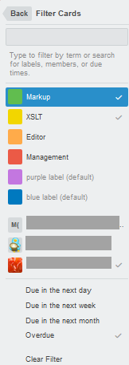

At board level, you can use card filtering to display cards with specific labels, members, due dates and keywords. Filtering even works if you
are not a member.
Go to Show Menu > Menu > Filter Cards.

Type the words you are searching for, separated by commas, in the search field.
Select the labels
Select the members
Select the due terms
The board will show only the cards that correspond to the search criteria. The board menu displays the
active filtering link (Filtering is on).
To change the filters, click Filtering is on and click the criteria again, to activate/ deactivate them.